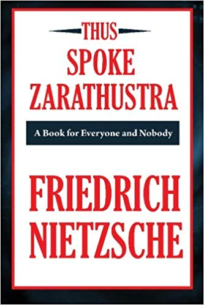
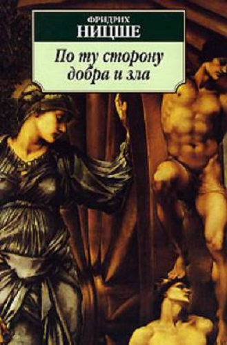

Так говорил Заратустра

Книга содержит ключевые идеи Ницше: Бог умер (антитеизм), сверхчеловек (социальный дарвинизм), воля к власти (витализм). Доктрине прогресса (поступательного развития), которая господствовала в умах европейцев с эпохи Просвещения, Ницше противопоставил учение о вечном возвращении, о цикличности любого развития. Только сверхчеловек способен с готовностью принять бесконечное возвращение однажды пережитого, включая самые горькие минуты. Отличие такого существа от обычного человека, по Ницше, в порядке отличия человека от обезьяны.
В данном произведении он обращается к тем, кто способен быть "честным в интеллектуальных вещах до жестокости", ибо только такие читатели способны вынести "серьезность и страсть", с которыми Ницше громит христианские ценности и низвергает саму идею христианства.
По ту сторону добра и зла

Идея сверхчеловека развивается в этой книге в форме отточенных аналитических афоризмов, в которых сконцентрирована острая авторская критика современности – ее философии, науки, искусства, политики и, главное, морали. На страницах этой пророческой работы, не случайно имеющей подзаголовок «Прелюдия к философии будущего», немецкий мыслитель предсказал и грядущий распад европейской духовности, и «восстание масс» с последующим воцарением «грядущего хама», и нивелирование личности под флагом всеобщего равенства людей, и грандиозную борьбу за мировое господство, и тоталитаризм как следствие демократизации Европы. Неизбежность этих событий и явлений продиктована, по мысли Ницше, чреватой тиранией «моралью рабов», которой отравлено его время и над которой он призывает возвыситься философов будущего, способных, как ему представляется, стать по ту сторону добра и зла.